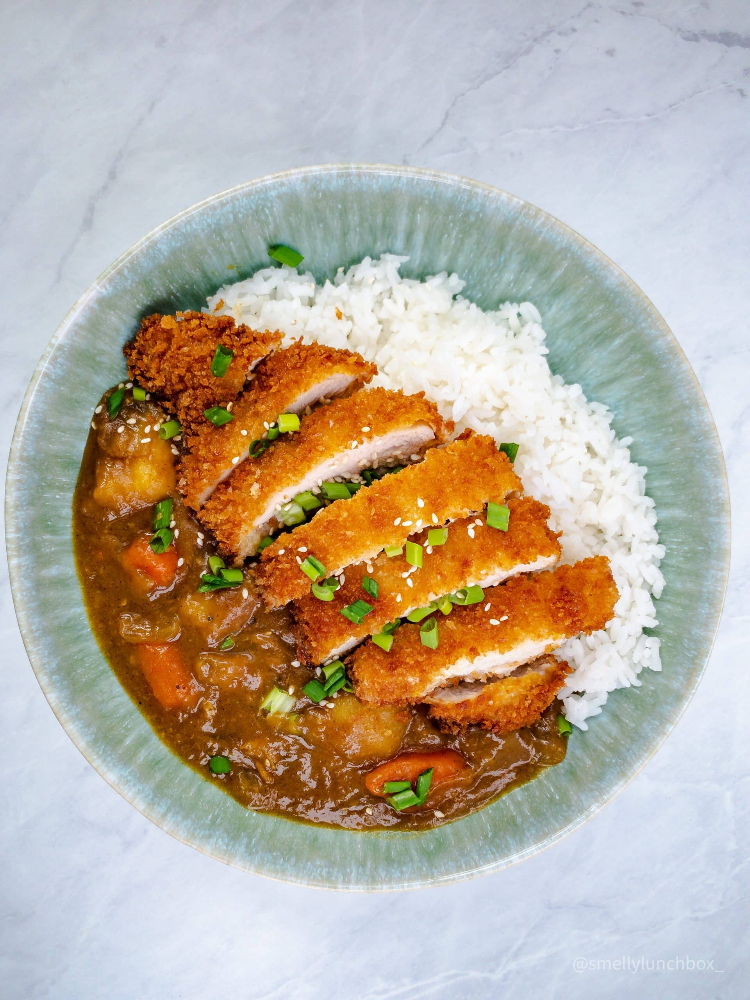

Katsu Curry

Description
Chicken katsu curry is a beloved Japanese comfort dish that perfectly balances texture and flavor. It starts with a tender chicken breast that’s coated in panko breadcrumbs and deep-fried until golden brown and crispy. The chicken is then sliced and served alongside a bed of fluffy steamed rice. What makes the dish truly special is the Japanese curry sauce—thick, smooth, and mildly spiced with notes of turmeric, cumin, and a touch of sweetness. The curry is often poured generously over the chicken and rice, creating a warm, hearty meal that’s both satisfying and comforting. Some versions include vegetables like carrots, onions, and potatoes simmered in the curry for extra depth. The contrast between the crunchy chicken and the silky, savory sauce makes every bite deliciously indulgent. Often garnished with pickled radish or a sprinkle of green onions, chicken katsu curry offers a perfect blend of Japanese flavor and homestyle comfort.
Ingredients
- 1 Egg
- 1 cup Flour
- 1 Cup Panko Breadcrumbs
- 1 Chicken Breast
- 1/2 cup cooked Rice
- 1/2 cup Cubed Potato
- 1/2 cup Sliced Carrot
- Golden Curry Packet
- Sesame Seeds (Garnish)
- Preheat Air Fryer to 375.
- Start by using a mallet or the bottom of a saute pan to flatten the chicken breast, it should be about 1 inch thick at the thickest point.
- Crack and beat the egg in a bowl, in a sperate bowl add flour.
- Place the chicken breast in the flour and fully coat. Then transfer to the bowl containing beaten eggs and fully coat
- In a seperate bowl, add pank bread crumbs. Transfer chicken from egg bowl to Panko and cover with breadcrumbs. Press down slightly to make sure breadcrumbs actually stick to the chicken breast
- Place chicken in the air fryer for 20 minutes, flipping half way through.
- While the chicken is cooking, bring 2 cups of water to a boil. Add potatoes and carrots and cook for 10 minutes.
- Stir in 1/2 of the golden curry packet until fully incorperated, about 5 minutes. remove from heat
- In a bowl add rice. Slice cooked chicken and lay on top of rice.
- Laddle potato/carrot sauce on top of chicken and rice
- Garnish with Sesame seeds and anything of your liking.
Home